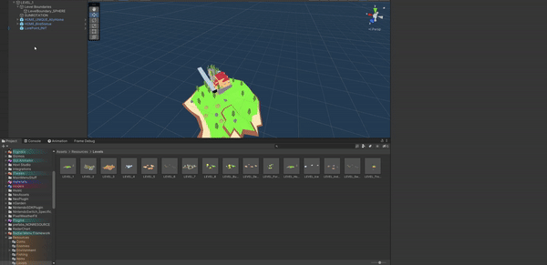
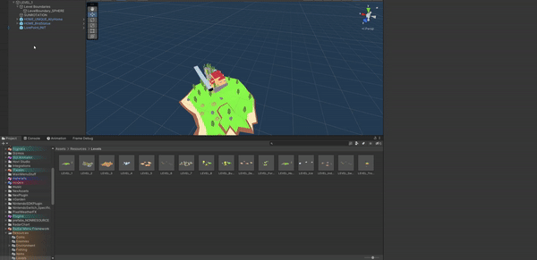
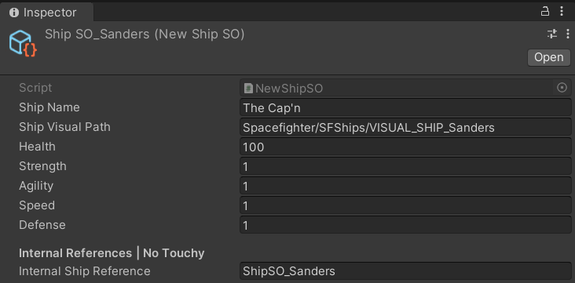
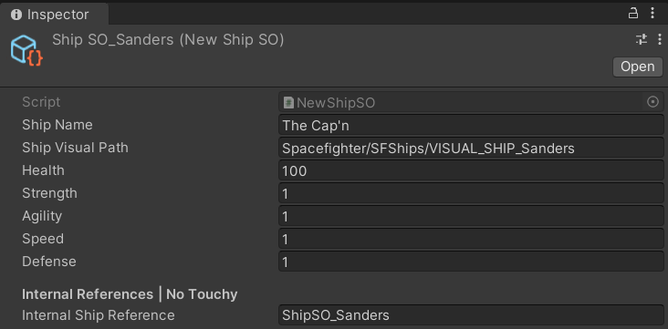

Skycadia is a retro arcade dogfighter released on Xbox, Switch, and Steam. As a Unity developer for Skycadia I created development tools using C# and Rider/Visual Studio 2022 primarily focused on the creation of systems supporting weapons, ships, and dialogue in the project.
This tool uses Prefabs and ScritableObjects to easily create Lore points that supply information and dialogue to the player.
Creating this small tool improved the speed of the creation process immensely, creating a ship was just a few clicks.
Setup the project with git.
Taught team members how to add , commit, push, fetch, create branch, and merge changes.
This tool makes creating what we call Lore Points easier to insert into levels. The examples below show how I created the LorePoint script which allows the current dialgue system to be modular and used anywhere.
 

This is the script that made the entire system modular. Instead of creating a single Lore point that couldn't be reused (as it was only activated when you spawn), this takes a more modular approach where the user will spawn a module/GameObject which has its own data. That data is read from this script effectively making this script the core of my system.
private void OnTriggerEnter(Collider other)
{
if (other.gameObject.CompareTag("TargetableEntity"))
{
RadioTransmissionManager radioLore = GetComponent();
SFGameManager.instance.radioTransmissionManager = radioLore;
radioLore.enabled = true;
}
}
The snippet below will allow the object to be spawned from a menu item where the camera is currently looking. So instead of creating a GameObject and filling that object with the components it needs, it can be spawned from a preconfigured menu.
private void OnTriggerEnter(Collider other)
[MenuItem("Skycadia/Create LorePoint")]
public static void CreateLorePoint(MenuCommand menuCommand)
{
CreatePrefab("LorePoint");
}
[MenuItem("GameObject/Create LorePoint", false, 0)]
public static void CreateLorePointCtxMenu()
{
CreatePrefab("LorePoint");
}
public static void CreatePrefab(string path)
{
GameObject loreObject = PrefabUtility.InstantiatePrefab(Resources.Load(path)) as GameObject;
Place(loreObject);
}
public static void Place(GameObject gameObject)
{
// Find location
SceneView lastView = SceneView.lastActiveSceneView;
gameObject.transform.position = lastView ? lastView.pivot : Vector3.zero;
// Make sure we place the object in the proper scene, with a relevant name
StageUtility.PlaceGameObjectInCurrentStage(gameObject);
GameObjectUtility.EnsureUniqueNameForSibling(gameObject);
// Record undo, and select
Undo.RegisterCreatedObjectUndo(gameObject, $"Create Object: {gameObject.name}");
Selection.activeGameObject = gameObject;
// For prefabs, let's mark the scene as dirty for saving
EditorSceneManager.MarkSceneDirty(EditorSceneManager.GetActiveScene());
}
void OnDrawGizmosSelected()
{
// Draw a yellow sphere at the transform's position
Gizmos.color = new Color(.5f, .5f, 1f, .5f);
Gizmos.DrawSphere(transform.position, GetComponent().radius * transform.localScale.x);
}
I developed this system to allow designers to create and modify pilots and ships easily. The pilot and ships system was originally hard-coded but due to the inexperience of team I had to create a more efficient method.
The system is based on Scriptable Objects. Scriptable Objects are cross-scene data sets used for storing data and creating a simple way to edit the data instead of hard-coding it.
The screenshots below are examples of my designer‐friendly system. It allows non‐programmers to iterate faster. If a designer or artist needs to make a change they have a quick and easy way to do so.
 

The orignal system contained hard-coded values that had to be changed from within the scripts.
The snippet below creates a new attribute much like any other attribute that already exists and looks like [newAttribute]. This attribute acts like a conditional operator which will hide or show something depending on a boolean.
// Determine whether this field should be visible.
// (We could probably do some caching here...)
bool ShouldShow(SerializedProperty property) {
var conditionAttribute = (ConditionalPropertyAttribute)attribute;
string conditionPath = conditionAttribute.condition;
// If this property is defined inside a nested type
// (like a struct inside a MonoBehaviour), look for
// our condition field inside the same nested instance.
string thisPropertyPath = property.propertyPath;
int last = thisPropertyPath.LastIndexOf('.');
if (last > 0) {
string containerPath = thisPropertyPath.Substring(0, last + 1);
conditionPath = containerPath + conditionPath;
}
// Get the SerializedProperty representing the field that is our criterion.
var conditionProperty = property.serializedObject.FindProperty(conditionPath);
// For now, we'll only support bool criteria, and default to visible if there's a problem.
if (conditionProperty == null || conditionProperty.type != "bool")
return true;
// Use the condition property's boolean value to drive visibility.
return conditionProperty.boolValue;
}
public override void OnGUI(Rect position, SerializedProperty property, GUIContent label) {
if(ShouldShow(property))
EditorGUI.PropertyField(position, property, label, true);
}
public override float GetPropertyHeight(SerializedProperty property, GUIContent label) {
if (ShouldShow(property)) {
// Provision the normal vertical spacing for this control.
return EditorGUI.GetPropertyHeight(property, label, true);
} else {
// Collapse the unseen derived property.
return -EditorGUIUtility.standardVerticalSpacing;
}
}
This code snippet is an example of my ConditionalProperty attribute in use. It checks for a boolean value and according to that boolean state the inspector will dynamically change to match your selection. This way unnecessary values are hidden making it easier to read at a glance.
[Header("Weapon Type Attributes")]
[Header("Weapon Type")]
[Tooltip(
"Enable one of these to define the type and to enable to attributes for that type of weapon. | CHOOSE ONE")]
public bool isRapidShot;
public bool isScatterShot;
public bool isChargeShot;
//public bool isMissile;
public bool isFlamethrower;
[Header("Rapid Shot Attributes")]
[ConditionalProperty("isRapidShot")]
public float dmg;
[ConditionalProperty("isRapidShot")]
public float accuracy;
[ConditionalProperty("isRapidShot")]
public float decay;
[ConditionalProperty("isRapidShot")]
public float bulletScale = 1f;
[Header("Scatter Shot Attributes")]
[ConditionalProperty("isScatterShot")]
public float buckShotCount;
[ConditionalProperty("isScatterShot")]
public float buckShotDmg;
[ConditionalProperty("isScatterShot")]
public float buckShotDirRandAmt;
[ConditionalProperty("isScatterShot")]
public float buckShotFireRate;
[Header("Charge Shot Attributes")]
[ConditionalProperty("isChargeShot")]
public float chargeShotDmg;
[ConditionalProperty("isChargeShot")]
public float chargeShotAccuracy;
[ConditionalProperty("isChargeShot")]
public float chargeShotDecay;
[ConditionalProperty("isChargeShot")]
public float chargeShotFireRate;
[Header("Flamethrower Attributes")]
[ConditionalProperty("isFlamethrower")]
public float throwerShotCount;
[ConditionalProperty("isFlamethrower")]
public float throwerShotDmg;
[ConditionalProperty("isFlamethrower")]
public float throwerShotDirRandAmt;
[ConditionalProperty("isFlamethrower")]
public float throwerShotFireRate;
These two screen shots below take the conditional operator and display the weapons stats. If you were to select a certain type of shot style you would get separate settings to modify and set up.